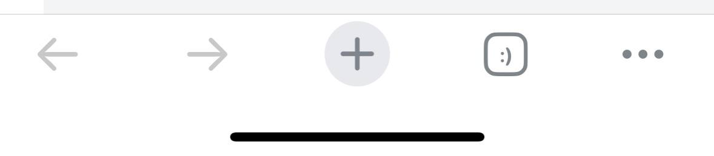
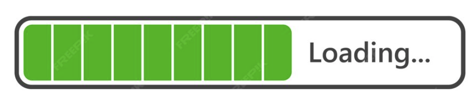
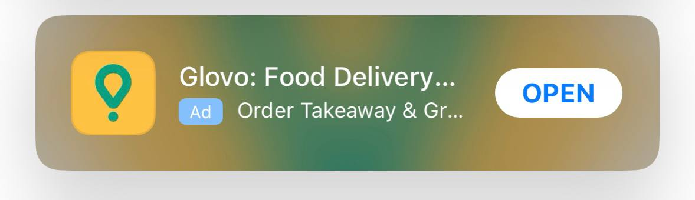
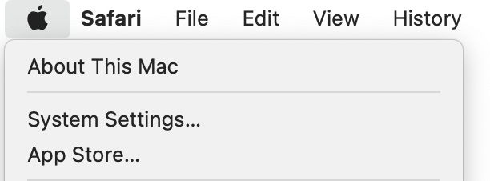

I state that ellipsis is overused in user interfaces. They are everywhere, which leads to inconsistent usage and design clutter.
I write this article as a reply to John Saito's article "The Mighty Ellipsis". While I'm not going to doubt John's arguments that an ellipsis is great to point to "More actions", or Menu:
I also agree that ellipsis is necessary to reflect the "Wait for a second" or "In process" action:
And of course, no doubt we need to put them when it's not sufficient place for the text:
However, I'd like to argue we need an ellipsis to express "There's a follow-up decision". Using ellipsis in this context is a nightmare.
Let me provide the arguments:
1. Disrespect to users
So, we express in a very special way that clicking the button leads to another action. Why? We underestimate users' intellectual abilities in this way. I bet users clearly understand what will happen when they click System Settings or App Store, even with no ellipsis.
2. Useless in comparison with other tools
If we care about users maturely, we must hone user flows, UI, and UX to perfection. Let's add confirmation messages, information tooltips, and create perfect copies — this helps avoid mistakes, not ellipses.
3. Endless inconsistency
Ellipsis are impossible to use consistently. This is the Help menu of Slack. Slack is great; I love it, so it's nothing personal. Everybody could be in its place:) But I need to exemplify my point.
What's New… and Release Notes are written in a different way even though users see very similar pieces of text:
While you can't interact with What's New… page in any way, you can use the menu and search on Release Notes. I don't see the logic in those ellipsis. It just brings extra inconsistency and confusion.
A small bonus from Slack:

4. Visual buzz
Reaching genuine simplicity costs UX writers and designers an arm and a leg. And then the ellipsis comes out:) Just compare:
The Mighty Ellipsis article was written in 2016, and UX writers still use it to reference the source of truth. However, the ellipsis has become a relic. The modern world doesn't need them anymore in that quantity.